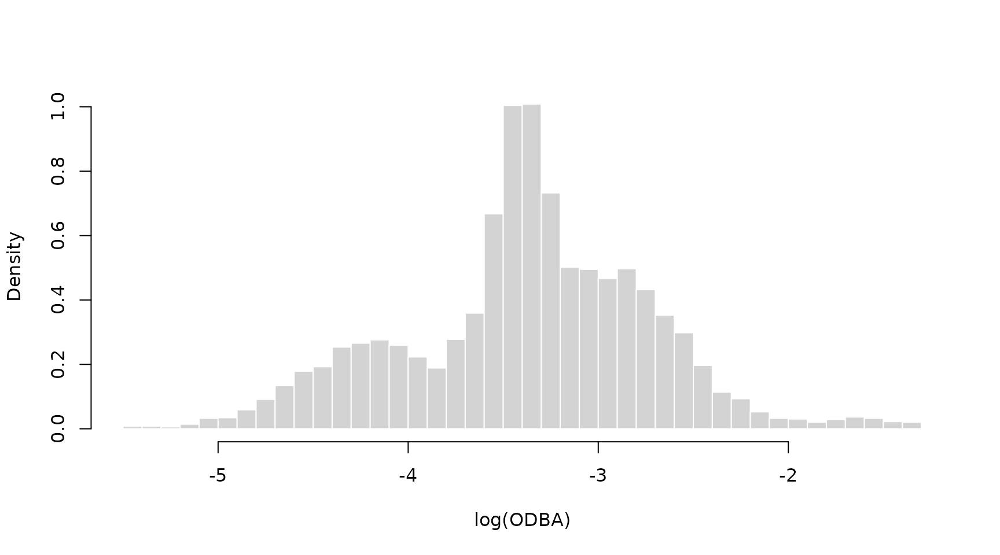
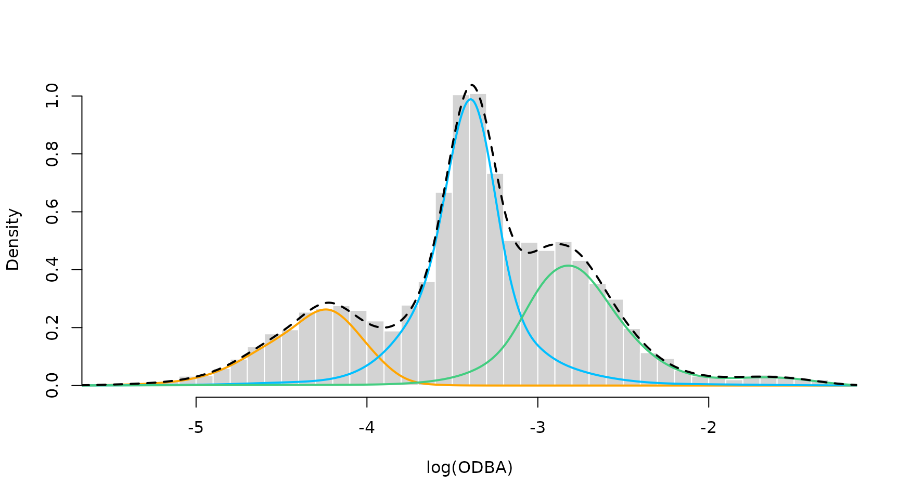

Before diving into this vignette, we recommend reading the vignettes Introduction to LaMa, Inhomogeneous HMMs, Periodic HMMs and LaMa and RTMB.
This vignette explores how LaMa can be used to fit
models involving nonparameteric components, represented by
penalised splines. The main idea here is that it may be
useful to represent some relationships in our model by smooth functions
for which the functional form is not pre-specified, but flexibly
estimated from the data. For HMM-like models, this is particularly
valuable, as the latent nature of the state process makes modelling
choices more difficult. For example, choosing an appropriate
parametric family for the state-dependent
distributions may be difficult, as we cannot do state-specific
EDA before fitting the model. Also very difficult is the dependence of
transition probabilities on covariates, as the
transitions are not directly
observed. Hence, the obvious alternative is to model
these kind of relationships flexibly using splines but imposing a
penalty on the smoothness of the estimated functions. This leads us to
penalised splines.
LaMa contains helper functions that build
design and penalty matrices for given
formulas (using mgcv under the hood) and also functions to
estimate models involving penalised splines in a random effects
framework. For the latter to work, the penalised
negative log-likelihood needs to be compatible with the R
package RTMB to allow for automatic differentiation
(AD). For more information on RTMB, see the
vignette LaMa and RTMB or check out its documentation.
For more information on penalised splines, we recommend Wood (2017).
Smooth transition probabilites
We will start by investigating a 2-state HMM for the
elephant data set where the transition probabilities are
expressed as smooth functions of the time of day using cyclic
P-Splines. The relationship can then be summarised as
where is a smooth periodic function of time of day. We model the elephant’s step lengths and turning angles using state-dependent gamma and von Mises distributions.
To ease with model specification, LaMa provides the
function make_matrices() which creates
design and penalty matrices for
regression settings based on the R package mgcv. The user
only needs to specify the right side of a formula using
mgcv syntax and provide data. Here, we use
s(tod, by = "cp") to create the matrices for cyclic
P-splines (cp). This results in a cubic B-Spline basis,
that is wrapped at boundary of the support (0 and 24). We then append
both resulting matrices to the dat list.
modmat = make_matrices(~ s(tod, bs = "cp"), # formula
data = data.frame(tod = 1:24), # data
knots = list(tod = c(0, 24))) # where to wrap the cyclic basis
Z = modmat$Z # spline design matrix
S = modmat$S # penalty matrixWe can now specify the penalised negative log-likelihood
function. We can compute the transition probability matrix the
regular way using tpm_g(). In the last line we need to add
the curvature penalty based on S, which we can conveniently
do using penalty().
pnll = function(par) {
getAll(par, dat)
# cbinding intercept and spline coefs, because intercept is not penalised
Gamma = tpm_g(Z, cbind(beta0, betaSpline))
# computing all periodically stationary distributions for easy access later
Delta = stationary_p(Gamma); REPORT(Delta)
# parameter transformations
mu = exp(logmu); REPORT(mu)
sigma = exp(logsigma); REPORT(sigma)
kappa = exp(logkappa); REPORT(kappa)
# calculating all state-dependent densities
allprobs = matrix(1, nrow = length(step), ncol = N)
ind = which(!is.na(step) & !is.na(angle)) # only for non-NA obs.
for(j in 1:N){
allprobs[ind,j] = dgamma2(step[ind],mu[j],sigma[j]) * dvm(angle[ind],0,kappa[j])
}
-forward_g(Delta[tod[1],], Gamma[,,tod], allprobs) + # regular forward algorithm
penalty(betaSpline, S, lambda) # this does all the penalisation work
}We also have to append a lambda vector to our
dat list which is the initial penalty
strength parameter vector. In this case it is of length two
because our coefficient matrix has two rows.
par = list(logmu = log(c(0.3, 2.5)), # state-dependent mean step
logsigma = log(c(0.2, 1.5)), # state-dependent sd step
logkappa = log(c(0.2, 1.5)), # state-dependent concentration angle
beta0 = c(-2, 2), # state process intercepts
betaSpline = matrix(rep(0, 2*(ncol(Z)-1)), nrow = 2)) # spline coefs
dat = list(step = elephant$step, # observed steps
angle = elephant$angle, # observed angle
N = 2, # number of states
tod = elephant$tod, # time of day (used for indexing)
Z = Z, # spline design matrix
S = S, # penalty matrix
lambda = rep(100, 2)) # initial penalty strengthThe model fit can then be conducted by using the qreml()
function contained in LaMa. The quasi restricted
maximum likelihood algorithm finds a good penalty strength by
treating the spline coefficients as random effects. Under the hood,
qreml() also constructs an AD function with
RTMB but uses the qREML algorithm
described in Koslik (2024) to fit the model. We have to tell the
qreml() function which parameters are spline coefficients
by providing the name of the corresponding list element of
par.
There are some rules to follow when using qreml():
- The likelihood function needs to be
RTMB-compatible, i.e. have the same structure as all the likelihood functions in our vignette – most importantly, it should be a function of the parameter list only. - The penalty strength vector
lambdaneeds its length to correspond to the total number of spline coefficient vectors used. In our case, this is the number of rows of betaspline, but if we additionally had a different spline coefficient (with a different name) in our parameter list, possibly with a different length and a different penalty matrix, we would have needed more elements inlambda. - The
penalty()function can only be called once in the likelihood. If several spline coefficients are penalised,penalty()expects a list of coefficient matrices or vectors and a list of penalty matrices. - When we summarise multiple spline coefficients in a matrix in our
parameter list – which is very useful when these are of same lengths and
have the same penalty matrix – this matrix must be arranged by
row, i.e. each row is one spline coefficient vector. If it is
arranged by column,
qreml()will fail.
system.time(
mod <- qreml(pnll, par, dat, random = "betaSpline")
)
#> Creating AD function
#> Initializing with lambda: 100 100
#> outer 1 - lambda: 2.93 2.612
#> outer 2 - lambda: 0.417 0.423
#> outer 3 - lambda: 0.311 0.162
#> outer 4 - lambda: 0.308 0.121
#> outer 5 - lambda: 0.308 0.113
#> outer 6 - lambda: 0.308 0.113
#> Converged
#> user system elapsed
#> 6.796 0.176 6.863The mod object is now a list that contains everything
that is reported by the likelihood function, but also the
RTMB object created in the process. After fitting the
model, we can also use the LaMa function
pred_matrix(), that takes the modmat object we
created earlier, to build a new interpolating design matrix using the
exact same basis expansion specified above. This allows us to plot the
estimated transition probabilities as a smooth function of time of
day.
Gamma = mod$Gamma
Delta = mod$Delta
tod_seq = seq(0,24, length=200)
Z_pred = pred_matrix(modmat, data.frame(tod = tod_seq))
Gamma_plot = tpm_g(Z_pred, mod$beta) # interpolating transition probs
plot(tod_seq, Gamma_plot[1,2,], type = "l", lwd = 2, ylim = c(0,1),
xlab = "time of day", ylab = "transition probability", bty = "n")
lines(tod_seq, Gamma_plot[2,1,], lwd = 2, lty = 3)
legend("topleft", lwd = 2, lty = c(1,3), bty = "n",
legend = c(expression(gamma[12]^(t)), expression(gamma[21]^(t))))
plot(Delta[,2], type = "b", lwd = 2, pch = 16, xlab = "time of day", ylab = "Pr(active)",
col = "deepskyblue", bty = "n", xaxt = "n")
axis(1, at = seq(0,24,by=4), labels = seq(0,24,by=4))
Smooth density estimation
To demonstrate nonparametric estimation of the state-dependent
densities, we will consider the shark data set. It contains
acceleration data, specifically the overall dynamic body
acceleartion (ODBA). ODBA is strictily positive with some very
extreme values, making direct analysis difficult. Hence, for our
analysis we consider the logarithm of ODBA as our observed process.
head(shark)
#> ODBA logODBA state
#> 1 0.03775025 -3.276763 2
#> 2 0.05417830 -2.915475 2
#> 3 0.03625247 -3.317248 2
#> 4 0.01310802 -4.334531 1
#> 5 0.05402441 -2.918319 3
#> 6 0.06133794 -2.791357 3
hist(shark$logODBA, prob = TRUE, breaks = 50, bor = "white",
main = "", xlab = "log(ODBA)")
Clearly, there are at least three behavioural states in the data, and we start by fitting a simple 3-state Gaussian HMM with likelihood function:
nll = function(par){
getAll(par, dat)
sigma = exp(logsigma)
REPORT(mu); REPORT(sigma)
Gamma = tpm(eta)
delta = stationary(Gamma)
allprobs = matrix(1, length(logODBA), N)
ind = which(!is.na(logODBA))
for(j in 1:N) allprobs[ind,j] = dnorm(logODBA[ind], mu[j], sigma[j])
-forward(delta, Gamma, allprobs)
}We then fit the model as explained in the vignettte LaMa and RTMB.
# initial parameter list
par = list(mu = c(-4.5, -3.5, -2.5),
logsigma = log(rep(0.5, 3)),
eta = rep(-2, 6))
# data and hyperparameters
dat = list(logODBA = shark$logODBA, N = 3)
# creating automatically differentiable objective function
obj = MakeADFun(nll, par, silent = TRUE)
# fitting the model
opt = nlminb(obj$par, obj$fn, obj$gr)
# reporting to get calculated quantities
mod = obj$report()
# visualising the results
color = c("orange", "deepskyblue", "seagreen3")
hist(shark$logODBA, prob = TRUE, breaks = 50, bor = "white",
main = "", xlab = "log(ODBA)")
for(j in 1:3) curve(mod$delta[j] * dnorm(x, mod$mu[j], mod$sigma[j]),
add = TRUE, col = color[j], lwd = 2, n = 500)
We see a clear lack-of-fit due to the inflexibility of the Gaussian state-dependent densities. Thus, we now fit a model with state-dependent densities based on P-Splines.
In a first step, this requires us to prepare the
design and penalty matrices needed
using buildSmoothDens(). This function can take multiple
data streams and a set of initial parameters (specifying initial means
and standard deviations) for each data stream. It then builds the
P-Spline design and penalty matrices for each data
stream as well as a matrix of initial spline
coefficients based on the provided parameters. The basis
functions are standardised such that they integrate to one, which is
needed for density estimation.
modmat = buildSmoothDens(shark["logODBA"], # only one data stream here
k = 25, # number of basis functions
par = list(logODBA = list(mean = c(-4, -3.3, -2.8),
sd = c(0.3, 0.2, 0.5))))
#> logODBA
#> Leaving out last column of the penalty matrix, fix the last spline coefficient at zero for identifiability!
#> Parameter matrix excludes the last column. Fix this column at zero!
# par is nested named list: top layer: each data stream
# for each data stream: initial means and standard deviations for each state
# objects for model fitting
Z = modmat$Z$logODBA # spline design matrix for logODBA
S = modmat$S$logODBA # penalty matrix for logODBA
beta = modmat$coef$logODBA # initial spline coefficients
# objects for prediction
Z_pred = modmat$Z_predict$logODBA # prediction design matrix
xseq = modmat$xseq$logODBA # prediction sequence of logODBA valuesThen, we can specify the penalised negative log-likelihood function.
The six lines in the middle are needed for P-Spline-based density
estimation. The coefficient matrix beta provided by
buildSmoothDens() has one column less than the number of
basis functions, which is also printed when calling
buildSmoothDens(). This is because the last column,
i.e. the last coefficient for each state, needs to be fixed to zero for
identifiability which we do by using
cbind(beta, 0). Then, we transform the unconstrained
parameter matrix to non-negative weights that sum to one (called
alpha) for each state using the inverse multinomial
logistic link (softmax). The columnns of the allprobs
matrix are then computed as linear combinations of the columns of
Z and the weights alpha. Lastly, we penalise
the unconstrained coefficients beta (not the constrained
alpha’s) using the penalty() function.
pnll = function(par){
getAll(par, dat)
# regular stationary HMM stuff
Gamma = tpm(eta)
delta = stationary(Gamma)
# smooth state-dependent densities
alpha = exp(cbind(beta, 0))
alpha = alpha / rowSums(alpha) # multinomial logit link
REPORT(alpha)
allprobs = matrix(1, nrow(Z), N)
ind = which(!is.na(logODBA))
allprobs[ind,] = Z[ind,] %*% t(alpha)
# forward algorithm + penalty
-forward(delta, Gamma, allprobs) +
penalty(beta, S, lambda)
}Now we specify the initial parameter and data list and fit the model
par = list(beta = beta, # spline coefficients prepared by buildSmoothDens()
eta = rep(-2, 6)) # initial transition matrix on logit scale
dat = list(logODBA = shark$logODBA, N = 3,
Z = Z, # spline design matrix
S = S, # spline penalty matrix
lambda = rep(10, 3)) # initial penalty strength vector
# fitting the model using qREML
system.time(
mod2 <- qreml(pnll, par, dat, random = "beta")
)
#> Creating AD function
#> Initializing with lambda: 10 10 10
#> outer 1 - lambda: 2.258 1.645 3.555
#> outer 2 - lambda: 1.718 1.411 2.705
#> outer 3 - lambda: 1.627 1.381 2.475
#> outer 4 - lambda: 1.611 1.376 2.401
#> outer 5 - lambda: 1.608 1.375 2.377
#> outer 6 - lambda: 1.608 1.375 2.368
#> outer 7 - lambda: 1.608 1.375 2.367
#> outer 8 - lambda: 1.608 1.375 2.367
#> Converged
#> user system elapsed
#> 17.910 2.480 17.393After fitting the model, we can easily visualise the smooth densities
using the prepared prediction objects. We already have access to all
reported quanitites because qreml() automatically runs the
reporting after model fitting.
sDens = Z_pred %*% t(mod2$alpha) # all three state-dependent densities on a grid
hist(shark$logODBA, prob = TRUE, breaks = 50, bor = "white", main = "", xlab = "log(ODBA)")
for(j in 1:3) lines(xseq, mod2$delta[j] * sDens[,j], col = color[j], lwd = 2)
lines(xseq, colSums(mod2$delta * t(sDens)), col = "black", lwd = 2, lty = 2)
The P-Spline model results in a very good fit to the empirical distribution. This is beause the first state has a skewed distribution, the second state has a high kurtosis and the third state has a funny right tail. The P-Spline model can capture all of these features where the parametric model failed to do so.